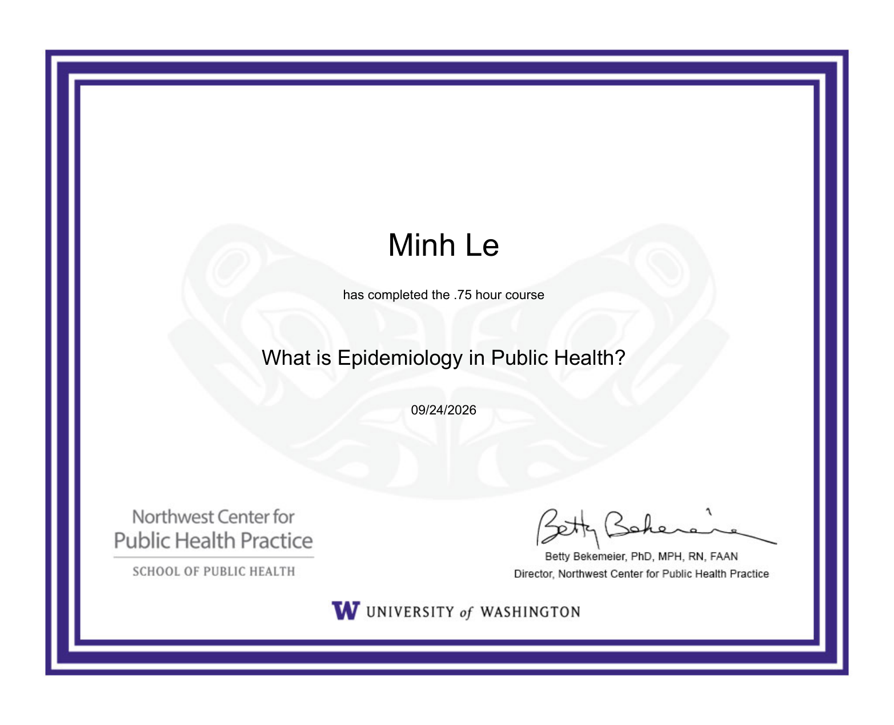
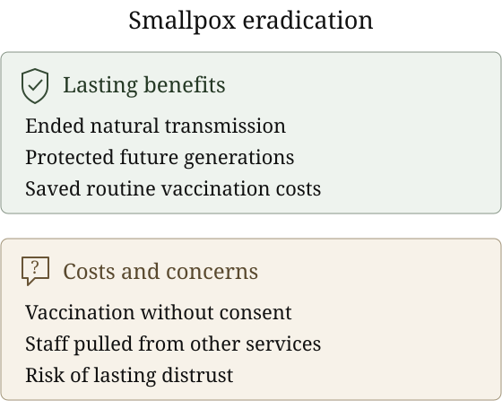

Post-reflection
The short version
- I have a better understanding of how living conditions affect health.
- I ask more questions about health statistics and the decisions behind health programs.
- I can use this class to understand my own health, my family and community, and public policy.
1. Greatest accomplishments
In my pre-reflection, I set a goal of being able to explain a social determinant of health with a real example. I can do that now. Someone who cannot afford to miss work may put off getting care. Someone whose home has unsafe water has fewer ways to avoid getting sick. Income and living conditions affect what people can do for their health.
I also have a better grasp of the basic terms. The epidemiology training helped me understand the difference between incidence, which measures new cases over a period of time, and prevalence, which measures how common existing cases are in a population.[1] That distinction matters when I read about a disease or try to understand a graph. I can ask what is being measured before drawing a conclusion.
My Prompt 2 reflection was one chance to put these ideas together through the cookstove case and environmental health data. It helped me practice connecting numbers to people's living conditions. Across the course, being able to explain those connections in my own words is the accomplishment that matters most to me.

2. How I changed
I pay more attention to what makes a healthy choice possible. It is easy to tell someone to eat better, get treatment, or avoid an unhealthy environment. Those suggestions assume they have enough money, time, and access to do it. I am less quick to judge someone's health based on their choices alone.
Unnatural Causes and the readings on social determinants helped me see how this applies within a country and within a community. Income, working conditions, and control over daily life all matter.[2] This made global health feel more relevant to the people around me. I can think about differences in health among people who live nearby, as well as differences between countries.
The clearest change has been in how I think and explain things. If health comes up in a conversation, I have more to contribute than general advice about individual habits. I can bring up practical questions, like whether someone can afford care or take time off work.
3. What interested me most
I was especially interested in smallpox eradication. I already had some interest in disease modeling, so it was useful to read about how people actually found cases and stopped transmission. Foege's account showed the work involved: searching for outbreaks, organizing workers, following reports, and vaccinating people around cases.[3] It gave me a more concrete understanding of what a public health campaign does.
Reading Greenough alongside Foege made the discussion more complicated. Eradication had lasting benefits, but the campaign also involved coercion and took workers away from other services.[4] In preparing the arguments for eradication, I had to think about those objections seriously. I could support the goal and still question how people were treated during the campaign.

That was one of the most useful parts of the course for me: understanding why a health decision can be difficult even when the benefit seems clear. How much should a program cost? Who should it reach first? What happens to other services? How much say do the people affected have? These questions made the policy side of global health more interesting to me.
4. Traits and values
| Trait or value | How it showed up |
|---|---|
| Curiosity | Following how the smallpox campaign found cases and why workers changed their methods. |
| Care with evidence | Learning to distinguish incidence from prevalence in the training and checking what the environmental health data measured. |
| Willingness to reconsider | Taking the criticisms of smallpox eradication seriously while preparing arguments in favor of it. |
| Fairness | Paying attention to people who have fewer resources or are harder for health services to reach. |
Fairness is probably the value I came back to most. A program can look successful overall while still missing people who need it. I want to keep asking who is included in a result and who might be left out.
5. Where I'm already using it
When I read a health headline, I look more closely at the number behind it. Is it a total number of cases or a rate? What population and time period does it cover? Are two places being compared in a fair way? The class has given me a few basic questions that help me understand what a claim actually means.
It also connects to how I think about disease models. A model needs assumptions about how people interact and whether they can get prevention or treatment. The readings give me reasons to question those assumptions. For example, telling people to stay home when they are sick assumes that missing work is an option for them. That connects the math to work and income: a prediction about an intervention depends partly on whether people can actually follow the advice.
For myself and my family, I am more aware of how everyday circumstances affect health. Stress, food, work, and the environment are things I can pay attention to when thinking about how we are doing. The class gives me a broader way to understand those concerns and better questions to ask.
6. Where I'll use it next
In college, I can use this perspective when another class involves data, human behavior, or public decisions. I want to keep checking whether an explanation accounts for the conditions people actually live in. That is useful even when the subject is outside global health.
I also want to understand health policy better. When I hear about a vaccination program, a tobacco rule, or funding for sanitation, I can ask what problem it is meant to address, who benefits, who pays, and how its effects will be measured. I have a better sense of why policies are shaped by money, public support, and competing needs.
At the community level, this helps me think about shared services. Clean water, safe public spaces, and access to care affect people around me as well as my own household. I can use what I learned when deciding which local issues deserve my attention and support.
7. What I want to take with me
I'm not planning to become a doctor or work in government. This class is still useful for understanding my own health, my family's health, and the health of my community. It also helps me understand why health policies are shaped the way they are and how they affect everyday life. At the end of college, I picture myself looking at a health story in the news with my family, hearing their questions, and feeling comfortable discussing it. I want to keep using what I learned to make informed decisions and understand the health issues that affect the people around me.